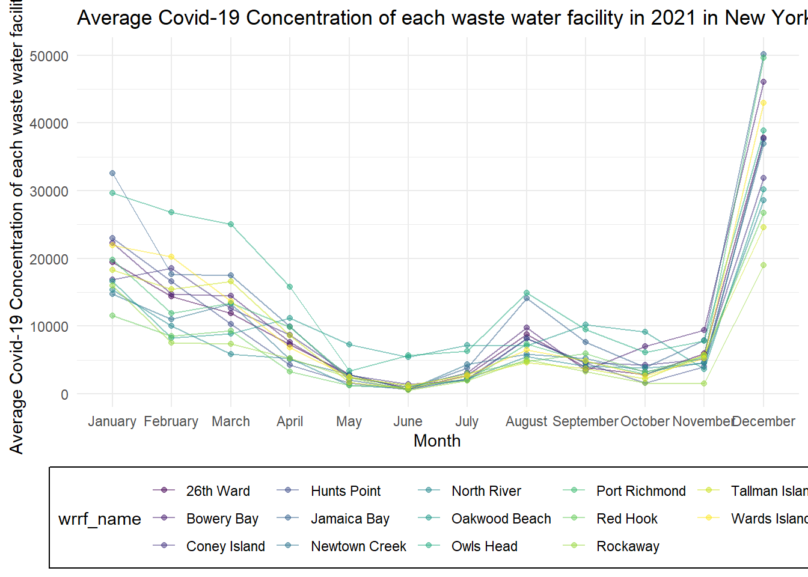
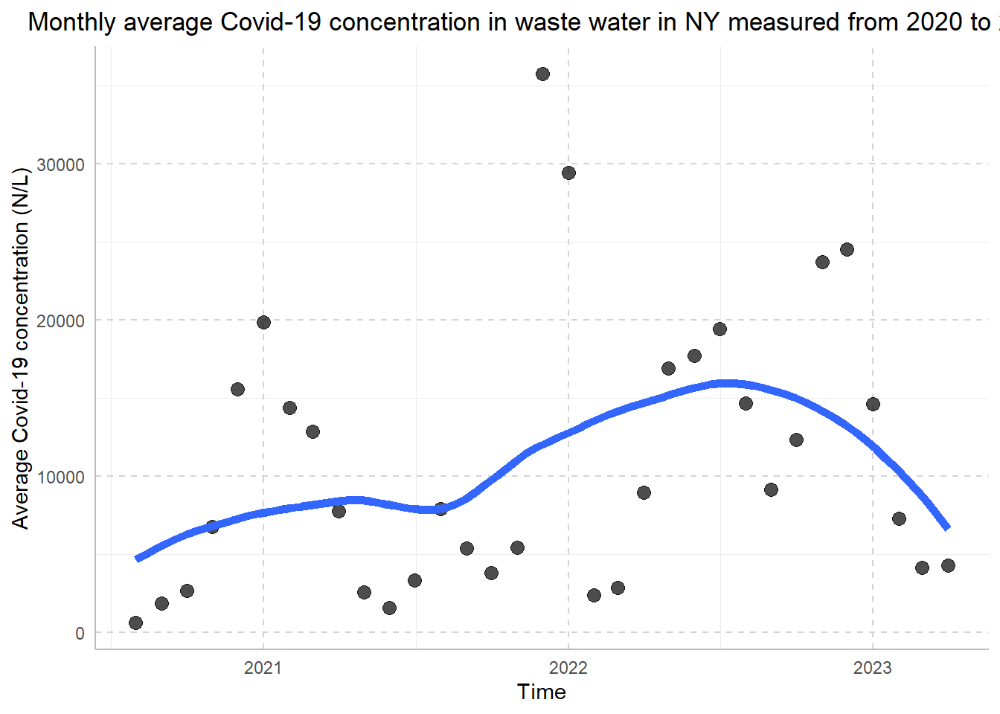

COVID-19 cases are constantly fluctuating and to better understand recent trends, we decided to analyze SARS-CoV-2 concentrations in wastewater data for the possibility of future public health interventions.
With our interest in the current COVID-19 climate in NYC, we first create data visualizations to see what trends are apparent. We saw a clear trend in high COVID-19 concentrations in the winter time and lower in the winter times. However, we knew we needed to test this hypothesis to make any conclusions. For the purposes of this project, takign locations into consideration would allow us to demonstrate our data analysis and visualizations skills.
We used open data sources from ‘NYC Open Data’ and ‘figshare’:
SARS-CoV-2 concentrations measured in NYC Wastewater (NYC Open Data)
HydroWaste Mapping data (figshare)
For our purposes, we have loaded the following R packages:
library(tidyverse)
library(ggridges)
library(patchwork)
library(readxl)
library(lubridate)
library(leaflet)
library(plotly)
library(readr)
library(knitr)First, we imported the SARS-CoV-2 concentrations measured in NYC Wastewater and HydroWaste mapping data using the read_csv.
map <-
read_csv("data/HydroWASTE_v10.csv")
head(map) %>%
knitr::kable(digits = 3) %>%
kableExtra::kable_styling(bootstrap_options = c("striped", "hover"), font_size = 12) %>%
kableExtra::scroll_box(width = "100%", height = "300px")| WASTE_ID | SOURCE | ORG_ID | WWTP_NAME | COUNTRY | CNTRY_ISO | LAT_WWTP | LON_WWTP | QUAL_LOC | LAT_OUT | LON_OUT | STATUS | POP_SERVED | QUAL_POP | WASTE_DIS | QUAL_WASTE | LEVEL | QUAL_LEVEL | DF | HYRIV_ID | RIVER_DIS | COAST_10KM | COAST_50KM | DESIGN_CAP | QUAL_CAP |
|---|---|---|---|---|---|---|---|---|---|---|---|---|---|---|---|---|---|---|---|---|---|---|---|---|
| 1 | 1 | 1140441 | Akmenes aglomeracija | Lithuania | LTU | 56.247 | 22.726 | 2 | 56.223 | 22.627 | Not Reported | 1060 | 2 | 148.213 | 4 | Advanced | 1 | 2421.974 | 20228874 | 4.153 | 0 | 0 | 4600 | 2 |
| 2 | 1 | 1140443 | Alytaus m aglomeracija | Lithuania | LTU | 54.432 | 24.056 | 2 | 54.519 | 24.098 | Not Reported | 87900 | 2 | 8797.904 | 1 | Advanced | 1 | 2534.527 | 20261585 | 257.983 | 0 | 0 | 220000 | 2 |
| 3 | 1 | 1140445 | Anyksciu aglomeracija | Lithuania | LTU | 55.509 | 25.073 | 2 | 55.452 | 25.006 | Not Reported | 12400 | 2 | 1959.285 | 1 | Advanced | 1 | 1367.809 | 20243105 | 30.995 | 0 | 0 | 33000 | 2 |
| 4 | 1 | 1140447 | Ariogalos aglomeracija | Lithuania | LTU | 55.252 | 23.484 | 2 | 55.210 | 23.510 | Not Reported | 2500 | 2 | 578.482 | 1 | Secondary | 1 | 2061.969 | 20247446 | 13.799 | 0 | 0 | 4357 | 2 |
| 5 | 1 | 1140449 | Baisogalos aglomeracija | Lithuania | LTU | 55.644 | 23.741 | 2 | 55.681 | 23.835 | Not Reported | 1200 | 2 | 167.788 | 4 | Secondary | 1 | 209.549 | 20239330 | 0.405 | 0 | 0 | 1490 | 2 |
| 6 | 1 | 1140451 | Birstono Prienu aglomeracija | Lithuania | LTU | 54.623 | 24.062 | 2 | 54.715 | 24.094 | Not Reported | 12400 | 2 | 2239.471 | 1 | Advanced | 1 | 10366.240 | 20256987 | 268.665 | 0 | 0 | 19000 | 2 |
wwtp <-
read_csv("data/SARS-CoV-2_concentrations_measured_in_NYC_Wastewater_20231129.csv")
head(wwtp) %>%
knitr::kable(digits = 3) %>%
kableExtra::kable_styling(bootstrap_options = c("striped", "hover"), font_size = 12) %>%
kableExtra::scroll_box(width = "100%", height = "300px")| Sample Date | Test date | WRRF Name | WRRF Abbreviation | Concentration SARS-CoV-2 gene target (N1 Copies/L) | Per capita SARS-CoV-2 load (N1 copies per day per population) | Annotation | Population Served, estimated | Technology |
|---|---|---|---|---|---|---|---|---|
| 08/31/2020 | 09/01/2020 | 26th Ward | 26W | 389 | 263535.6 | Concentration below Method Limit of Quantification (above Method Limit of Detection) | 290608 | RT-qPCR |
| 08/31/2020 | 09/01/2020 | Bowery Bay | BB | 1204 | 443632.9 | NA | 924695 | RT-qPCR |
| 08/31/2020 | 09/01/2020 | Coney Island | CI | 304 | 168551.6 | Concentration below Method Limit of Quantification (above Method Limit of Detection) | 682342 | RT-qPCR |
| 08/31/2020 | 09/01/2020 | Hunts Point | HP | 940 | 574446.6 | NA | 755948 | RT-qPCR |
| 08/31/2020 | 09/01/2020 | Jamaica Bay | JA | 632 | 233077.7 | NA | 748737 | RT-qPCR |
| 08/31/2020 | 09/01/2020 | Newtown Creek | NC | 197 | 122396.8 | Concentration below Method Limit of Quantification (above Method Limit of Detection) | 1156473 | RT-qPCR |
There is a total of __ observations and __ variables in the mapping dataset, and a total of __ observations and __ variables in the COVID-19 concentrations dataset.
We decided to analyze COVID-19 concentrations from the year 2021 and 2022 as these are recent years and would be most relevant to understand current the COVID cliamte. We are able to create visualizations with the 2023 observations, but we decided to leave it out of our final analysis because data was only taken from January to April of 2023. We focused only on COVID-19 concentrations that were collected using RT-qPCR because dPCR only had about 50 observations (not enough for thorough analysis).
After, cleaning and merging our raw datasets, our final dataset s is called ____ with variables:
Data dictionary:
wrrf_name: Wastewater Resource Recovery Facility (waste water treatment plant) where sample was taken
wrrf_abbrev: abbreviation for wrrf_name
concentration: Concentration of the N1 target of SARS-CoV2 genetic material measured in wastewater influent.
Average Covid-19 Concentration of each waste water facility in 2021
spaghetti_plot_2021 <-
rtqpcr |>
filter(year == 2021) |>
group_by(month, wrrf_name) |>
summarise(avg_conc = mean(concentration)) |>
ggplot(aes(x = month, y = avg_conc, color = wrrf_name, group = wrrf_name)) +
geom_line(alpha = .5) +
geom_point(alpha = .5) +
labs(x = "Month",
y = "Average Covid-19 Concentration of each waste water facility",
title = "Average Covid-19 Concentration of each waste water facility in 2021 in New York State") +
theme(legend.position = "bottom",
legend.box.background = element_rect())
spaghetti_plot_2021
Average Covid-19 Concentration of each waste water facility in 2022
spaghetti_plot_2022 <-
rtqpcr |>
filter(year == 2022) |>
group_by(month, wrrf_name) |>
summarise(avg_conc = mean(concentration)) |>
ggplot(aes(x = month, y = avg_conc, color = wrrf_name, group = wrrf_name)) +
geom_line(alpha = .5) +
geom_point(alpha = .5) +
labs(x = "Month",
y = "Average Covid-19 Concentration of each waste water facility",
title = "Average Covid-19 Concentration of each waste water facility in 2022 in New York State") +
theme(legend.position = "bottom",
legend.box.background = element_rect())
spaghetti_plot_2022
Average Covid-19 Concentration by waste water facility in 2021
box_plot_2021 <- rtqpcr %>%
filter(year == 2021) %>%
group_by(month, wrrf_name) %>%
summarise(avg_conc = mean(concentration)) %>%
plot_ly(
x = ~avg_conc,
y = ~wrrf_name,
type = "box",
color = ~wrrf_name,
colors = "viridis"
) %>%
layout(
xaxis = list(title = "Mean concentration (N/L)"),
yaxis = list(title = "Area"),
showlegend = FALSE
)
box_plot_2021Average Covid-19 Concentration by waste water facility in 2022
box_plot_2022 <- rtqpcr |>
filter(year == 2022) |>
group_by(month, wrrf_name) |>
summarise(avg_conc = mean(concentration)) %>%
plot_ly(
x = ~avg_conc,
y = ~wrrf_name,
type = "box",
color = ~wrrf_name,
colors = "viridis"
) |>
layout(
xaxis = list(title = "Mean concentration (N/L)"),
yaxis = list(title = "Area"),
showlegend = FALSE
)## `summarise()` has grouped output by 'month'.
## You can override using the `.groups` argument.box_plot_2021
Visualizations, summaries, and exploratory statistical
analyses. Justify the steps you took, and show any major changes to your
ideas.
If you undertake formal statistical analyses, describe these in detail Discussion: What were your findings? Are they what you expect? What insights into the data can you make? As this will be your only chance to describe your project in detail, make sure that your report is a standalone document that fully describes your process and results. We also expect you to write high-quality code that is understandable to an outside reader. Coding collaboratively and actively reviewing code within the team will help with this